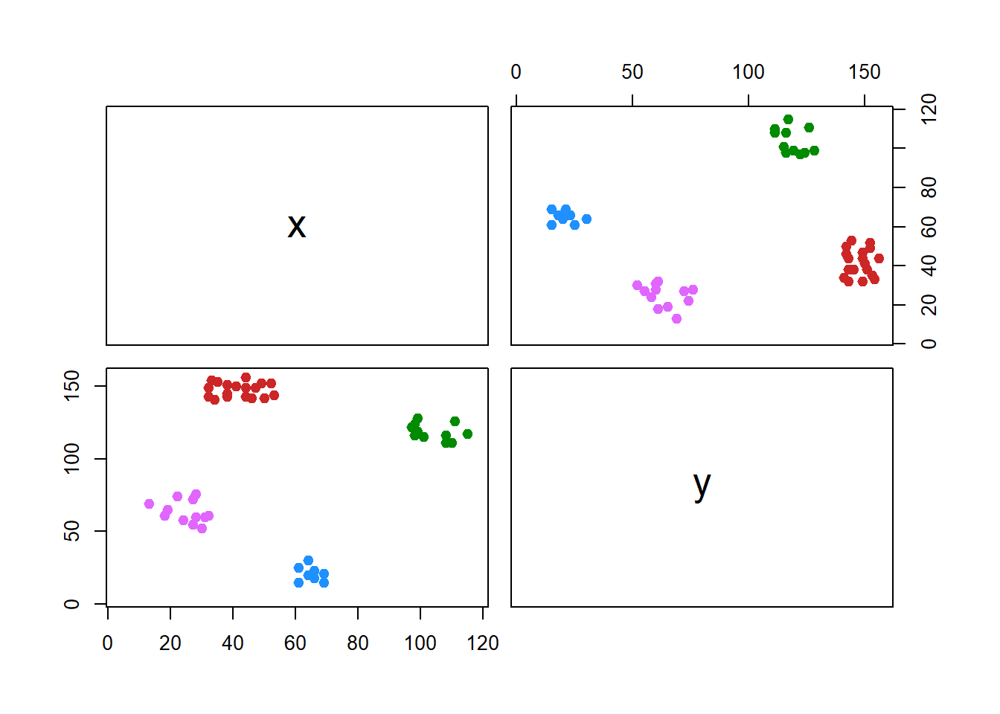

11.2 Eksperimen Algoritma Possibilistic C-Means Clustering
Persiapan Library
Possibilistic C-Means (PCM) adalah algoritma fuzzy clustering yang dirancang untuk menangani noise dan outlier dalam data. Pada eksperimen ini, kita akan mengimplementasikan PCM menggunakan beberapa library R, yaitu ppclust, factoextra, ggplot2, dan dplyr.
Dataset
Dataset Ruspini adalah sekumpulan data klasik yang sering digunakan dalam analisis klaster untuk demonstrasi dan pembelajaran. Dataset ini terdiri dari 75 titik data yang masing-masing direpresentasikan dalam dua dimensi Data ini tersedia secara bawaan dalam package cluster di R. Dataset ini pertama kali diperkenalkan oleh Ruspini pada tahun 1970 sebagai bagian dari studi tentang algoritma clustering.
Visualisasi sederhana dataset ini dapat dilakukan dengan:

Gambar 5.1: Scaterplot Dataset Ruspini
Inisialisasi Matriks Prototipe
Pada proses inisialisasi algoritma clustering, dua komponen utama yang dibutuhkan adalah matriks prototipe (pusat cluster) dan matriks derajat keanggotaan. Matriks prototipe diinisialisasi menggunakan algoritma K-means++ melalui fungsi kmpp() dari library inaparc. Algoritma ini dipilih karena kemampuannya untuk memberikan pusat cluster awal yang lebih baik dibandingkan metode acak. Dataset yang akan digunakan adalah x12, dengan jumlah cluster ditentukan sebanyak 2 (k=2). Fungsi ini menghasilkan matriks prototipe (v), yang merepresentasikan koordinat pusat cluster awal. Selanjutnya, matriks derajat keanggotaan diinisialisasi secara acak menggunakan fungsi imembrand(). Fungsi ini memanfaatkan jumlah baris pada dataset (nrow(x12)) untuk menentukan jumlah data yang akan dikelompokkan, dengan jumlah cluster yang sama, yaitu 2. Hasil dari fungsi ini adalah matriks derajat keanggotaan (u), yang berisi probabilitas awal keanggotaan setiap data ke masing-masing cluster. Kedua inisialisasi ini memainkan peran penting dalam meningkatkan efisiensi dan akurasi algoritma clustering Possibilistic C-Means.
Kedua komponen ini menjadi masukan awal untuk menjalankan algoritma Fuzzy C-Means (FCM) dengan fungsi fcm(), di mana parameter m=2 digunakan untuk menentukan tingkat fuzziness. Hasil dari proses FCM, yaitu prototipe akhir (fcm.res$v) dan derajat keanggotaan (fcm.res$u), digunakan sebagai inisialisasi untuk algoritma PCM.
PCM dijalankan menggunakan fungsi pcm(), dengan parameter \(eta=2\) untuk menentukan sensitivitas algoritma terhadap outlier. Hasil algoritma PCM mencakup derajat typicality (pcm.res$t), yang menunjukkan tingkat keanggotaan data terhadap cluster berdasarkan pendekatan possibilistic.
Derajat typicality ini ditampilkan menggunakan fungsi print().
print(pcm.res$t)
#> Cluster 1 Cluster 2 Cluster 3 Cluster 4
#> 1 0.01513084 0.28653608 0.013210283 0.023772225
#> 2 0.01683572 0.36423622 0.016056689 0.021170974
#> 3 0.01749978 0.49541164 0.015443457 0.025183893
#> 4 0.02026767 0.32866303 0.022400356 0.018269978
#> 5 0.01646227 0.38253751 0.013008272 0.031787895
#> 6 0.02024803 0.58010274 0.019450760 0.022643157
#> 7 0.02326760 0.20675078 0.030313063 0.015824746
#> 8 0.02218785 0.48247574 0.022684745 0.021041992
#> 9 0.02024084 0.85110514 0.016955666 0.029329037
#> 10 0.02150463 0.89864754 0.018596691 0.027694433
#> 11 0.02500234 0.62310895 0.023399634 0.024330878
#> 12 0.02686201 0.68322310 0.022936359 0.027848258
#> 13 0.02871089 0.51237658 0.025537492 0.025780077
#> 14 0.02149195 0.87150838 0.016410407 0.036143840
#> 15 0.02166821 0.70114275 0.015590955 0.041917536
#> 16 0.02350687 0.85540056 0.017405404 0.038071324
#> 17 0.02176565 0.52856633 0.014792487 0.049163248
#> 18 0.02469037 0.73474221 0.017574161 0.040924757
#> 19 0.02545341 0.70579908 0.018019599 0.040787678
#> 20 0.03196748 0.44914621 0.023694934 0.032563125
#> 21 0.03321389 0.02667612 0.405381687 0.006898398
#> 22 0.03574971 0.02530220 0.562388032 0.006814829
#> 23 0.03664273 0.02299855 0.621735209 0.006507278
#> 24 0.03460375 0.02262644 0.516840204 0.006372225
#> 25 0.04030399 0.02378171 0.815743362 0.006762745
#> 26 0.04395051 0.02401123 0.942243608 0.006925461
#> 27 0.04325429 0.02719409 0.853570071 0.007390505
#> 28 0.04418644 0.02849251 0.788213060 0.007618869
#> 29 0.03788668 0.02909479 0.527236337 0.007441848
#> 30 0.04056399 0.03036115 0.560382596 0.007735218
#> 31 0.04335571 0.02090656 0.641863857 0.006399837
#> 32 0.04810053 0.02418436 0.960816484 0.007087960
#> 33 0.05205069 0.02762645 0.862565401 0.007768757
#> 34 0.05580629 0.02791371 0.764344280 0.007936230
#> 35 0.05205881 0.02378726 0.847035785 0.007140851
#> 36 0.05229918 0.02209092 0.675203703 0.006857415
#> 37 0.06286556 0.02713788 0.610208880 0.008014431
#> 38 0.06681486 0.02539296 0.523026507 0.007809589
#> 39 0.05655066 0.02168564 0.544384616 0.006895206
#> 40 0.05768525 0.02005520 0.386493689 0.006625723
#> 41 0.08658766 0.03997958 0.168733507 0.011043567
#> 42 0.09644711 0.02823253 0.238263730 0.008995030
#> 43 0.10213069 0.02569380 0.217310787 0.008570601
#> 44 0.34444553 0.02179186 0.060680377 0.009400798
#> 45 0.44830301 0.02888735 0.046076001 0.012936045
#> 46 0.21819915 0.03803539 0.030152815 0.019700947
#> 47 0.15840343 0.04671539 0.032555534 0.021450663
#> 48 0.14689842 0.05030744 0.036678689 0.020634186
#> 49 0.88952043 0.02125013 0.036741950 0.010713623
#> 50 0.94056967 0.02254368 0.032824589 0.011885912
#> 51 0.84709774 0.02037980 0.036616128 0.010286978
#> 52 0.98543727 0.02135522 0.033351026 0.011181402
#> 53 0.69081008 0.01906485 0.037189977 0.009554567
#> 54 0.94534845 0.02165050 0.029942127 0.011879107
#> 55 0.65694714 0.01999117 0.024007015 0.012131562
#> 56 0.59481957 0.01930477 0.022947724 0.011931232
#> 57 0.77812078 0.01900116 0.025500667 0.011102436
#> 58 0.56176650 0.01631243 0.026095140 0.009201233
#> 59 0.50251956 0.01678205 0.021857025 0.010332884
#> 60 0.42923470 0.01655164 0.020500085 0.010498292
#> 61 0.01469418 0.03273547 0.006468083 0.308386220
#> 62 0.01730157 0.03378192 0.007057539 0.414412792
#> 63 0.02089868 0.03477093 0.007813372 0.315956553
#> 64 0.01676980 0.04886076 0.007707473 0.668607080
#> 65 0.01757301 0.04179467 0.007554900 0.790647133
#> 66 0.01866143 0.03556534 0.007434145 0.458512126
#> 67 0.01820343 0.04740698 0.007960666 0.956622822
#> 68 0.01592207 0.04910778 0.007527732 0.486250056
#> 69 0.01861630 0.05178830 0.008246481 0.940837571
#> 70 0.01955073 0.04738065 0.008252067 0.956061871
#> 71 0.01989772 0.05298573 0.008585251 0.936523822
#> 72 0.01990926 0.06260742 0.008977098 0.685589527
#> 73 0.02280356 0.04498182 0.008805394 0.481915109
#> 74 0.02412293 0.05346563 0.009531363 0.459629573
#> 75 0.02232604 0.06521175 0.009649294 0.542004411Visualisasi hasil clustering dilakukan melalui dua pendekatan: pertama, dengan memetakan cluster menggunakan derajat typicality maksimum.


fviz_cluster(list(data = df_pcm[, 1:2], cluster = df_pcm$cluster),
geom = "point",
ellipse = TRUE,
show.clust.cent = TRUE,
palette = "jco",
ggtheme = theme_minimal(),
main = "Visualisasi Hasil Clustering Possibilistic C-Means (PCM)")Gambar 11.1: Hasil CLuster PCM